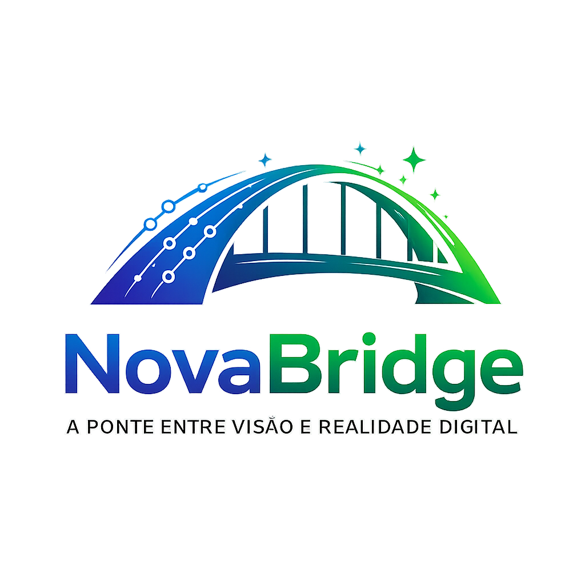

A ponte entre visão e realidade digital.
Engenharia de Software, Redes, Servidores, Dados, Automação, APIs e Suporte Técnico.
A NovaBridge é uma startup de Tecnologia da Informação especializada em engenharia de software, redes de computadores, administração de servidores, engenharia de dados, automação de processos, APIs, integrações e suporte técnico.
A nossa estrutura é orientada para empresas que precisam de soluções digitais confiáveis, com base em engenharia, organização operacional e maturidade técnica. A NovaBridge nasce com a visão de operar como uma empresa tecnológica em crescimento, com foco em entregas funcionais, sustentadas e preparadas para escalar.
Engenharia Multidisciplinar
Soluções Personalizadas
Infraestrutura & Software
A NovaBridge funciona como uma startup tecnológica com visão empresarial, capaz de atuar em diferentes camadas do ambiente digital das organizações. O nosso trabalho vai além do desenvolvimento de software. Atuamos também na infraestrutura que suporta as aplicações, nos dados que alimentam os processos, nas redes que conectam os ambientes e no suporte necessário para manter as operações funcionando.
Nossa missão é transformar necessidades empresariais em soluções tecnológicas estruturadas, seguras, eficientes e preparadas para evoluir.
A NovaBridge é uma startup tecnológica liderada por Alexio António Domingos Mango, CEO e Engenheiro de Software, com foco em soluções digitais para empresas. A empresa opera com contabilidade organizada e registo de atividades ativo na AGT sob o NIF 020455112LA052.
Não entregamos apenas soluções; acompanhamos a operação, a manutenção e a evolução dos ambientes tecnológicos.
Desenvolvemos soluções de software personalizadas para empresas, adaptadas aos seus processos, operações e necessidades específicas.
Criamos websites institucionais, sistemas web, ERPs, plataformas empresariais, aplicações internas, APIs, dashboards, portais e integrações entre sistemas.
Presença digital corporativa, comunicação institucional e experiências digitais alinhadas ao posicionamento da empresa.
Aplicações para apoiar processos internos, gestão operacional, recursos, faturação e organização empresarial.
Conectamos sistemas, automatizamos fluxos e facilitamos a troca de informação entre ferramentas e plataformas.
“Não entregamos apenas software. Construímos soluções alinhadas com o funcionamento real do negócio.”
Projetamos, configuramos e damos suporte a infraestruturas de redes de computadores para ambientes empresariais.
A NovaBridge pode atuar desde a arquitetura e configuração da rede até à manutenção, diagnóstico, segurança e monitorização da infraestrutura.
Estruturação da rede, distribuição de acessos, segmentação e organização do ambiente tecnológico para melhor performance e segurança.
Diagnóstico de infraestrutura, otimização de tráfego, controlo de acessos, estabilidade da rede e redução de falhas operacionais.
A NovaBridge trabalha com bases de dados, integração, organização, processamento e transformação de dados para apoiar operações empresariais e tomada de decisão.
Estruturação de dados e organização de informações para facilitar o acesso, a manutenção e a análise dos processos empresariais.
Conectamos fontes de dados, automatizamos fluxos de informação e apoiamos a criação de relatórios e dashboards operacionais.
“Dados estruturados permitem processos mais eficientes e decisões mais inteligentes.”
Administramos ambientes de servidores e infraestrutura tecnológica, ajudando empresas a manter as suas aplicações, serviços e dados disponíveis, organizados e seguros.
Monitorização, manutenção, organização e gestão de ambientes locais e cloud para garantir estabilidade e continuidade das operações.
Implementação de políticas de acesso, backups, monitorização e manutenção proativa para reduzir riscos de indisponibilidade.
A NovaBridge desenvolve e implementa soluções tecnológicas adaptadas às necessidades de cada organização.
Ferramentas para gerir operações internas, processos e informação de forma organizada e eficiente.
Presença digital profissional e estruturação de canais digitais para empresas e organizações.
Organização de informação, integração entre sistemas e suporte à gestão de dados críticos.
Arquitetura de redes, servidores, acesso e estrutura tecnológica para ambientes empresariais.
A NovaBridge pode atuar como o departamento tecnológico externo de empresas que já possuem uma carteira de clientes, permitindo que essas empresas ampliem os seus serviços sem precisar construir internamente uma equipa completa de TI.
Neste modelo, a empresa parceira mantém o relacionamento comercial, a venda e a gestão dos seus clientes. A NovaBridge assume a componente técnica.
Software, infraestrutura, redes, dados, automação e suporte trabalhando em conjunto para sustentar as operações do cliente.
A empresa parceira mantém a relação comercial. A NovaBridge fornece a capacidade técnica necessária para executar e sustentar as soluções.
Empresa Parceira
Comercial · Vendas · Relacionamento com Cliente · Gestão da Carteira
↓
NovaBridge
Engenharia de Software · Redes · Servidores · Dados · Automação · APIs · Suporte Técnico
↓
Cliente Final
Soluções · Implementação · Suporte · Manutenção
“Uma equipa tecnológica completa por trás da sua empresa.”
Tem um projeto, uma necessidade de infraestrutura ou procura uma equipa tecnológica para apoiar os seus clientes?
Fale connosco. A NovaBridge pode atuar diretamente com empresas ou como parceiro tecnológico externo.
+244 948 996 080
it.novabridge@gmail.com
Bairro Popular, Luanda, Angola